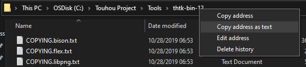
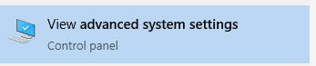
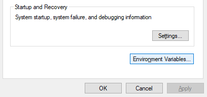

I will assume you have downloaded and extracted the tools somewhere in your computer (if not then do it before proceeding this).
First, go to the folder where you extracted the tools and copy the path to the folder.
Next, type "advanced system settings" in the Window search bar.
You will see a small window popping out, click on ""
